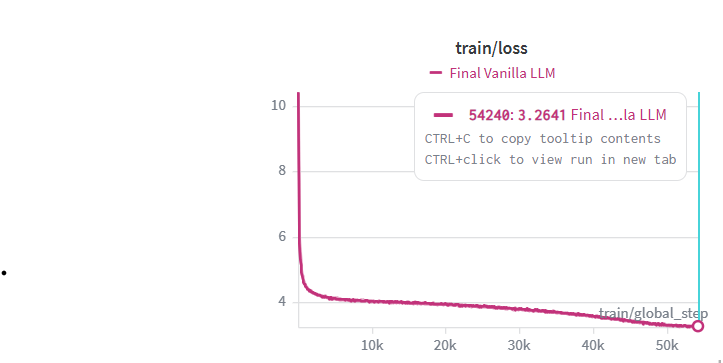
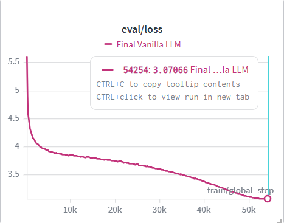
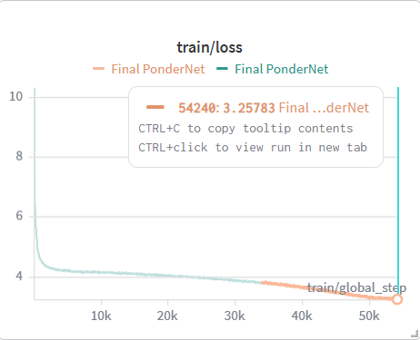
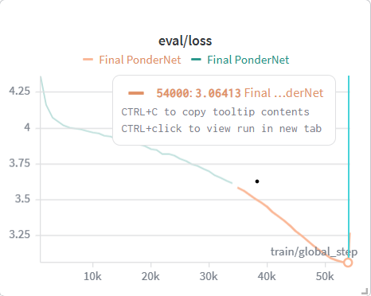
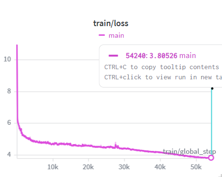
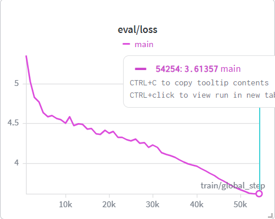

choi@2d-amoe: ~/research
$cat title.txt
2D-AMOE
효율적 추론을 위한 동적 그래프 확장 기반의 전문가 혼합 모델
# 2518 최지완 · 2402 강서희
# 지도교사 오대위 | 2026 과제연구
$python research_project_2-1.py
gpu-node: nvidia-smi
$nvidia-smi
+-----------------------------------------------------------------------------------------+ | NVIDIA-SMI 595.71.05 Driver Version: 595.71.05 CUDA Version: 13.2 | |-----------------------------------------+------------------------+----------------------+ | GPU Name Persistence-M | Bus-Id Disp.A | Volatile Uncorr. ECC | | Fan Temp Perf Pwr:Usage/Cap | Memory-Usage | GPU-Util Compute M. | | | | MIG M. | |=========================================+========================+======================| | 0 NVIDIA RTX OVERKILL On | 00000000:B5:00.0 Off | 0 | | N/A 88C P0 1099W / 1100W| 274998MiB / 275040MiB | 100% Cooking | | | | Disabled | +-----------------------------------------+------------------------+----------------------+ +-----------------------------------------------------------------------------------------+ | Processes: | | GPU GI CI PID Type Process name GPU Memory | | ID ID Usage | |=========================================================================================| | 0 N/A N/A 1337 C research_project_2-1.py 274984MiB | +-----------------------------------------------------------------------------------------+
FFNN의 수평적 효율화와
수직적 효율화를 한번에
토큰당 연산량 증가 없이 모델 용량을 확장하고, 입력 복잡도에 따라 연산 깊이를 동적으로 조절해 추론 FLOPs를 절감하는 상호보완적 효율성 체계.
#MoE#동적 연산 깊이#대조군 PonderNet·Vanilla#FineWeb 10B
Ⅰ. 서론
두 개의 축, 하나의 구조
↔️ 수평적 축
병렬 전문가(MoE)로 파라미터 확장
↕️ 수직적 축
동적 연산 깊이로 FLOPs 절감
🧠 2D-AMOE
두 축을 결합 → 시너지 극대화
Architecture
2D-AMoE 아키텍처
Ⅱ. 이론적 배경
Dense의 한계와 선행 연구
1. Dense 모델의 한계와 대안
연산적 비효율성
모든 파라미터가 매 토큰에 참여 → 단순 토큰도 동일 자원 소모, 규모에 따라 비용 선형 증가.
동적 연산량 할당
ACT(Graves, 2016): 조기 종료 결정. PonderNet(2021): 기하분포로 반복 횟수 확률 제어.
희소 파라미터
MoE(Shazeer, 2017): 라우터가 소수 전문가만 활성화 → 용량↑, 연산량은 통제.
2. 주요 선행 연구
MoE · Switch 단일 FFNN→다수 전문가, Top-1 라우팅으로 통신 오버헤드 최소화 ▸ 수조 단위 확장
PonderNet 종료 확률·기하분포 KL 정규화로 난이도 맞춤 적응형 계산 ▸ bAbI 16% 연산
CoE 전문가를 순차 연결해 표현 반복 정제 · hₜ=ΣwₜⁱEᵢ(hₜ₋₁) ▸ 메모리 42%↓
Muon 모멘텀 직교화(Newton-Schulz)로 다방향 균형 업데이트 ▸ AdamW 대비 52% FLOPs
Ⅲ. 연구 방법 및 절차
데이터 & 학습 설정
데이터셋
- FineWeb 10B 서브셋 (sample-10BT)
- tiktoken · r50k_base (5만 어휘)
- train 20억 / val 4천만 토큰 (uint16)
학습 설정
- 대조군 PonderNet · Vanilla LLM · 실험군 2D-AMOE
- 가능한 모든 인자는 동일 스윕 조건으로 통제
- 2D-AMOE: 균형 제어 인자 alpha 추가 탐색
학습 결과 · 대조군
Vanilla LLM
train

eval

학습 결과 · 대조군
PonderNet
train

eval

학습 결과 · 실험군
2D-AMoE
train

eval
